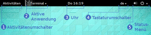
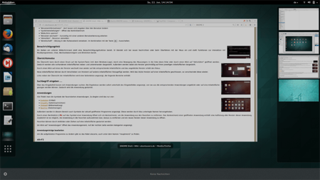
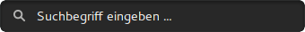
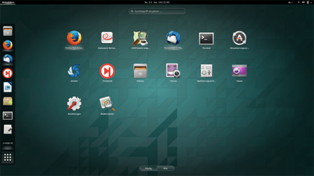
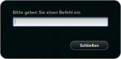
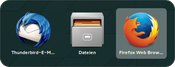
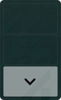
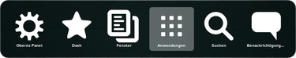
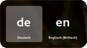

Bedienung
Dieser Artikel wurde für die folgenden Ubuntu-Versionen getestet:
Dieser Artikel ist größtenteils für alle Ubuntu-Versionen gültig.
Zum Verständnis dieses Artikels sind folgende Seiten hilfreich:

Die GNOME Shell von GNOME 3 verfolgt ein ganz anderes Bedienkonzept als zu Zeiten von GNOME 2. Es gibt zwei Modi, den Normalmodus und den Übersichtsmodus. Dieser Artikel soll einen kleinen Überblick über die Funktionsweisen der GNOME Shell mit seinen beiden unterschiedlichen Modi bieten.
Panel¶
 Im Vergleich zum alten GNOME 2 fällt auf, dass nur noch ein Panel am oberen Bildschirm existiert. Dieses Panel ermöglicht in der linken Ecke durch die Schaltfläche "Aktivitäten" den Wechsel zwischen den beiden Modi. Daneben wird die aktuell aktive Anwendung angezeigt. In der Mitte findet man eine Uhr und im rechten Bereich das Status-Menü. Der Funktionsumfang kann mit Hilfe von Erweiterungen erweitert werden. Die Abbildung zeigt das Aussehen des Panel, falls keine weiteren Erweiterungen verwendet werden.
Weitere Informationen und einen Vergleich mit dem alten Panel von GNOME 2 findet man im Artikel GNOME Panel.

Benachrichtigungsfeld¶
Bis Ubuntu 15.04¶
Ein Balken am unteren Bildschirmrand stellt eine Benachrichtigungsfunktion bereit. Er blendet ein, wenn man den Mauszeiger über den unteren Bildschirmrand hinaus bewegt und stellt Funktionen zur Interaktion mit Musikprogrammen, Chat, Wechseldatenträgern und Ähnlichem bereit. Außerdem lässt er sich durch Super + M öffnen.
Ab Ubuntu 15.10¶
Bei Berührung der linken unteren Ecke wird ein Pfeilsymbol eingeblendet. Ein Klick darauf blendet einen kleinen Balken mit Funktionen zur Interaktion mit laufenden Programmen ein. Benachrichtungen hingegen sind in den Kalenderbereich integriert, zu erreichen über einen Klick auf die Uhrzeit in der Mitte der oberen Leiste (Panel).
Übersichtsmodus¶
Die Übersicht kann durch einen Druck auf die System- oder Super-Taste Super (mit dem Windows-Logo), durch eine Bewegung des Mauszeigers in die linke obere Ecke oder durch einen Klick auf "Aktivitäten" geöffnet werden. Dadurch werden alle vorhandenen Arbeitsflächen neben- und untereinander dargestellt. Außerdem werden dabei alle Fenster gleichmäßig auf ihren jeweiligen Arbeitsflächen dargestellt.
Durch einen Klick auf eines der Fenster wechselt man wieder auf die entsprechende Arbeitsfläche und das angeklickte Fenster erhält den Fokus.
Neue Arbeitsflächen können durch Verschieben von Fenstern auf andere Arbeitsflächen hinzugefügt werden. Wird das letzte Fenster auf einer Arbeitsfläche geschlossen, so verschwindet diese wieder.

Mittig über den aktuellen Anwendungen, befindet sich ein Suchfeld, worüber sich Anwendungen, Ordner, aber je nach verwendetem Programm auch Dokumente, Videos und Musik finden lassen. Die Ergebnisse werden sofort unterhalb des Eingabefeldes angezeigt, von wo aus die entsprechenden Ergebnisse angeklickt oder auf eine Arbeitsfläche gezogen werden können. Dadurch wird die entsprechende Anwendung automatisch gestartet. Ein  Rechtsklick auf das gewünschte Programm öffnet ein weiteres Kontextmenü. Über "Zu Favoriten hinzufügen" kann die Anwendung zur Seitenleiste hinzugefügt werden.
Rechtsklick auf das gewünschte Programm öffnet ein weiteres Kontextmenü. Über "Zu Favoriten hinzufügen" kann die Anwendung zur Seitenleiste hinzugefügt werden.
Auf der linken Seite des Bildschirms wird die Seitenleiste angezeigt, die in der Grundkonfiguration die folgenden Bereiche enthält: 
Anwendungen¶
Hier findet man die Symbole der favorisierten Anwendungen. Zu Beginn sind das nur vier:
Außerdem werden in diesem Bereich auch Symbole der aktuell geöffneten Programme angezeigt. Diese werden durch eine helle Unterlegung hervorgehoben. Durch einen Rechtsklick auf das Symbol einer Anwendung öffnet sich ein Kontextmenü, um die Anwendung aus den Favoriten zu entfernen. Das Kontextmenü einer geöffneten Anwendung enthält eine Auflistung aller Fenster dieser Anwendung. Zusätzlich ist es möglich, die Anwendung in die Favoriten aufzunehmen bzw. daraus zu entfernen und ein neues Fenster dieser Anwendung zu öffnen. Favoriten können durch Anklicken oder Ziehen auf eine Arbeitsfläche gestartet werden.
Ein Klick auf das letzte Symbol der Seitenleiste (siehe Bild links), öffnet die Anwendungsübersicht. Die Anwendungsübersicht ist in zwei Ansichten unterteilt. Zuerst werden die häufig verwendeten Anwendungen angezeigt, mit einem Klick auf die untere Schaltfläche "Alle" kann man sich alle installierten Anwendungen anzeigen lassen, welche leider unsortiert angezeigt werden.
Kategorien erstellen¶
Mit Hilfe des dconf-Editors[1] kann man aber nachträglich alle Anwendungen in Ordner sortieren. Dazu muss man im Pfad org → gnome → shell den Schlüssel "app-folder-categories" um folgende Einträge ergänzen:
1 | ['Utilities', 'Education', 'Sundry', 'Wine', 'Office', 'Network', 'Internet', 'Graphics', 'Games', 'Multimedia', 'System', 'Development', 'Accessories', 'System Settings', 'Other'] |
Natürlich ist es auch möglich nur manche Anwendungen zu ordnen, dafür nur die gewünschten Kategorien in den Schlüssel eintragen.
Hinweis:
Diese Anleitung funktioniert nicht unter Ubuntu 15.04.
Erweiterungen¶
Der Funktionsumfang der GNOME Shell lässt sich über diverse Erweiterungen, Extensions genannt, individuell anpassen. Die Installation und Konfiguration der Erweiterungen ist unter GNOME Shell/Extensions beschrieben.
Tastenkürzel¶
Wie man Tastenkürzel ändert oder eigene Tastenkürzel erstellt, ist in GNOME Tastenkürzel beschrieben. 
Anwendungsstarter¶
Auch bei der GNOME Shell kann durch Alt + F2 wie gewohnt eine Eingabezeile für Befehle an das System geöffnet werden. Der Anwendungsstarter ist sehr einfach gehalten und bietet nur die Möglichkeit, den Namen eines Programms oder einen Befehl einzugeben. Durch das Betätigen von ↑ und ↓ kann man durch die letzten Eingaben blättern und diese gegebenenfalls erneut aufrufen. Bestätigt man diesen mittels ⏎ wird das Programm ohne Terminal gestartet. Nutzt man hingegen die Tastenkombination Strg + ⏎ , wird der Befehl in einem neuen Terminal ausgeführt.
Fensterwechsel¶

Mit
Alt +
Tab ⇆ kann zwischen geöffneten verschiedenen Anwendungen gewechselt werden. Dabei werden die Anwendungen aller Arbeitsflächen angezeigt. Auch werden die Fenster der gleichen Anwendung gruppiert. Um die Fenster innerhalb einer Gruppe zu wechseln, betätigt man einfach
Alt +
^ .

Wechsel zwischen Arbeitsflächen¶
Mit Strg + Alt + ↑ sowie Strg + Alt + ↓ wechselt man zwischen den momentan vorhandenen Arbeitsflächen. Die aktuelle Anwendung wird durch Strg + Alt + ⇧ + ↑ bzw. Strg + Alt + ⇧ + ↓ auf die vorherige / nächste Arbeitsfläche verschoben. Im rechten Bereich des Übersichtmodus kann per Maus zwischen den Arbeitsflächen gewechselt werden. Ebenso kann dort die aktive Anwendung jeder Arbeitsfläche auf eine andere Arbeitsfläche verschoben werden.
Wechsel zwischen Desktopelementen¶
 Durch das Drücken der Tasten Strg + Alt + Tab ⇆ öffnet sich eine Schaltfläche, mit welcher man zwischen den einzelnen Elementen der GNOME Shell wechseln kann, ohne die Maus zu benutzen. Wird die Funktion bei Anzeige des Desktops aufgerufen, kann man das obere Panel auswählen; dann kann man z.B. das Status-Menü erreichen und mit der Tastatur bedienen. Benutzt man die Funktion im Übersichtsmodus der Shell, so hat man ungleich mehr Auswahlmöglichkeiten. Dort kann man zwischen dem Dash (Dock an der linken Seite), der Suche, dem Anwendungsmenü etc. auswählen.
Bildschirmvideo aufnehmen¶
Mit der Tastenkombination Strg + Alt + ⇧ + R kann man die GNOME-eigene Funktion zum Aufnehmen eines Bildschirmvideos aktivieren. Ist die Funktion aktiviert, wird ein roter Punkt im Status-Menü rechts oben angezeigt. Betätigt man die selbe Tastenkombination ein zweites Mal, so wird die Aufnahme gestoppt. Danach kann man im Homeverzeichnis im Ordner ~/Videos eine WebM-Datei finden. Der Dateiname lautet Bildschirmvideo von DD.MM.YYYY HH:MM:SS.webm. 
Tastaturlayout wechseln¶
Durch die Tastenkombination Super + kann man zwischen den eingestellten Tastaturlayouts wechseln.
 - Übersichtsartikel zur GNOME Shell
- Übersichtsartikel zur GNOME Shell- Erstellt mit Inyoka
-
 2004 – 2017 ubuntuusers.de • Einige Rechte vorbehalten
2004 – 2017 ubuntuusers.de • Einige Rechte vorbehalten
Lizenz • Kontakt • Datenschutz • Impressum • Serverstatus -
Serverhousing gespendet von